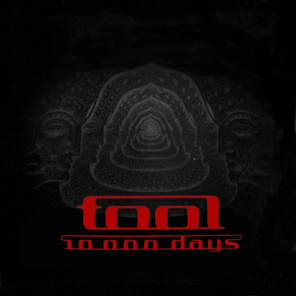

Description
10,000 Days is the Grammy Award-winning fourth studio album by American rock band Tool.The album was released on April 28, 2006 in parts of Europe, April 29 in Australia, May 1 in the United Kingdom, and May 2 in North America.
By the end of 2007 the album had sold 2.5 million copies worldwide and has been awarded a Platinum certification by the RIAA.
Price
$30.00 Available
